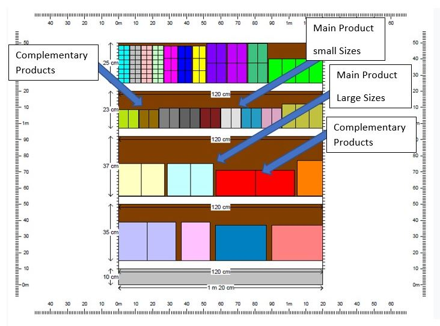

CAFÉ CON SABORES CÍTRICOS DEL CASANARE
This brand of coffee is produced in the eastern region of Colombia. It’s characterized by the quality of their products and the relationship that it has with their suppliers. The extra strong coffee, the protagonist of this campaign, is the result of an excellent and harmonious combination of the best Arabica and Robusta coffee beans, which offers a unique, smooth but strong flavor. With this ad you encourage great ideas that start with a coffee. It is characterized by being an instant coffee that is obtained simply by adding water.
It was a typical product in the Second World War because it was easy to make and transport and it kept very well. Finally, we can say without doubt that it’s the best brand coffee by the features of a great coffee.
PLANIMETRY
The planimetry helps us to determine the location and organization of the points of sale. A deeper study is necessary in terms of space, measurements, content and some additional aspects, since all distributors do not have the same space and distribution.
The best point is the level of the eyes and that of the hands, it should be noted that they are two preferred places of implantation. Products that are at eye level will attract more attention from buyers and those that are at hand level will be more within reach of the customer, that is, both locations are very good.
